Custom Pet Portraits of the Pets You Love
Send a photo, get a keepsake. Stephanie transforms your favorite picture of your pet into a hand-painted portrait full of character and warmth — capturing not just how they look, but who they are. Cats, dogs, horses, bunnies, birds, and everything in between.
From Photo to Painting
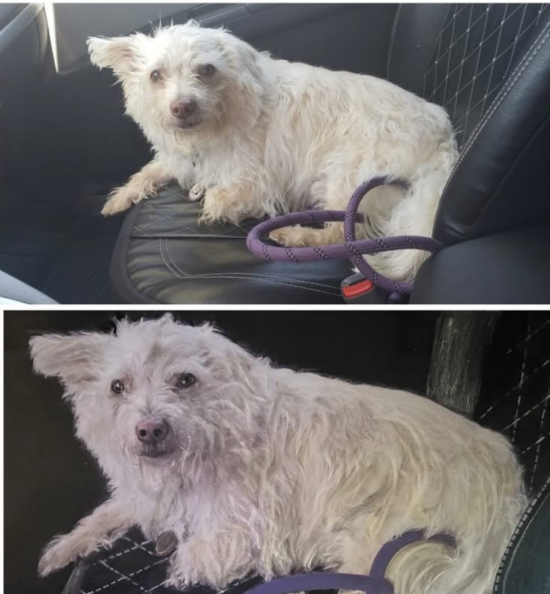
Sold for $400
A white dog's reference photo appears above its painted portrait, echoing its relaxed pose on a dark car seat.
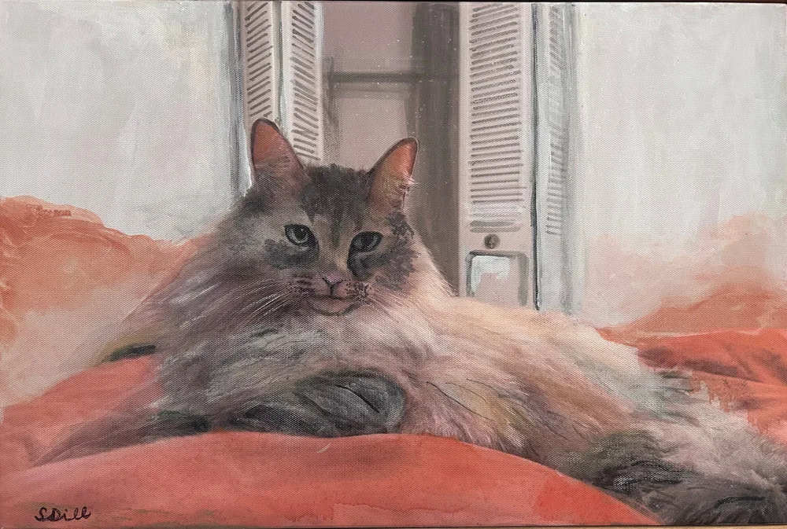
A gray cat's reference photo appears above a portrait of the cat reclining on orange bedding.
Materials: Chalk pastel, watercolor, acrylic, oil, markers, and canvas
Available · $750 · Ask about this piece →
Stretched canvas prints: 6 × 9 in — $39 · 8 × 12 in — $55
Handmade decorative outer frame +$75 · Installed hanging hardware +$5. Free local pickup; shipping quoted by destination. Prices in USD, before applicable tax.
The complete painting stays on the front, with solid-colour or mirrored edges and a small border if needed. Print and colour proof required before production. Other sizes by request after a sample print.
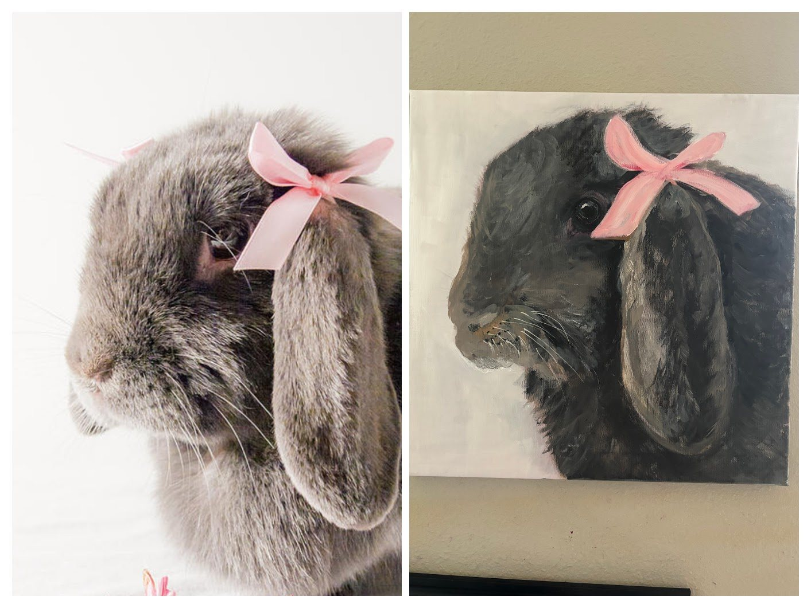
A gray lop-eared rabbit wears a pink bow in a reference photo paired with its dark-background portrait.
Size: Approximately 16 × 18 in
Materials: Acrylic and oil on canvas
Sold for $550
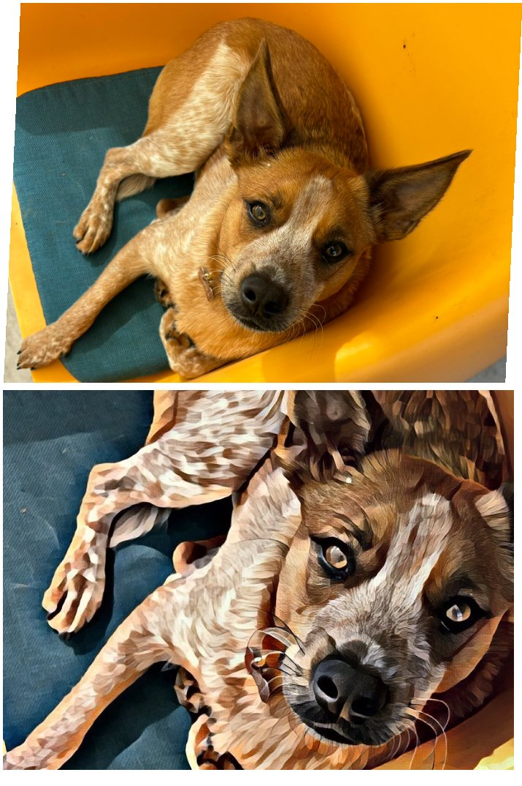
A red heeler's reclining pose is carried from a reference photo into a portrait with bold, textured markings.
Size: 36 × 42 in
Materials: Watercolor, oil pastel, felt pens, acrylic, and chalk on canvas
Sold for $800
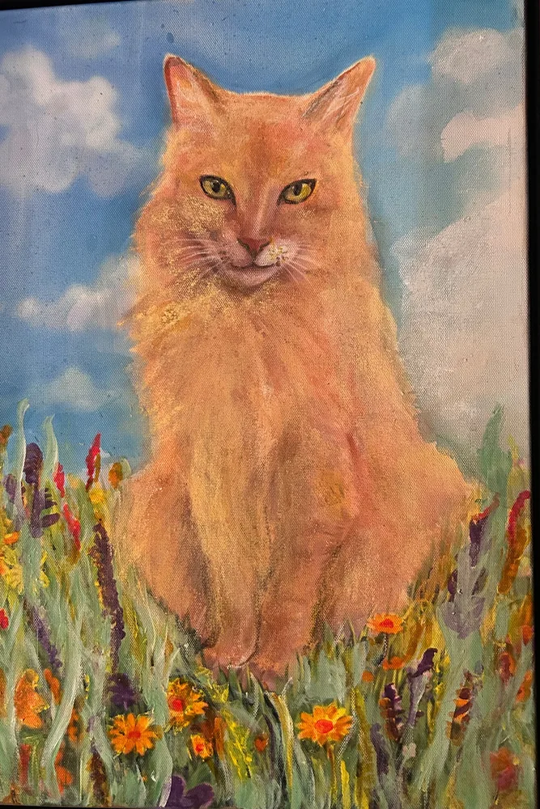
A pale orange cat's reference photo accompanies a portrait placing the seated cat among colorful flowers beneath a blue sky.
Size: 12 × 16 in
Materials: Oil pastels, markers, acrylic, and watercolor on canvas
Sold for $450
Stretched canvas prints: 6 × 9 in — $39 · 8 × 12 in — $55
Handmade decorative outer frame +$75 · Installed hanging hardware +$5. Free local pickup; shipping quoted by destination. Prices in USD, before applicable tax.
The complete painting stays on the front, with solid-colour or mirrored edges and a small border if needed. Print and colour proof required before production. Other sizes by request after a sample print.
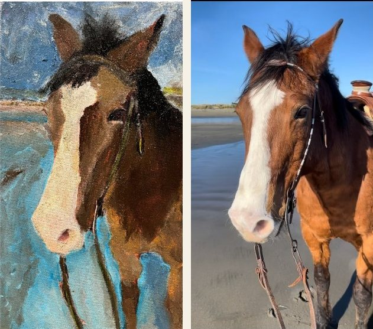
A horse's broad white blaze is echoed in a textured portrait beside its beachside reference photo.
Size: 12 × 20 in
Materials: Acrylic and oil on canvas
Sold for $400
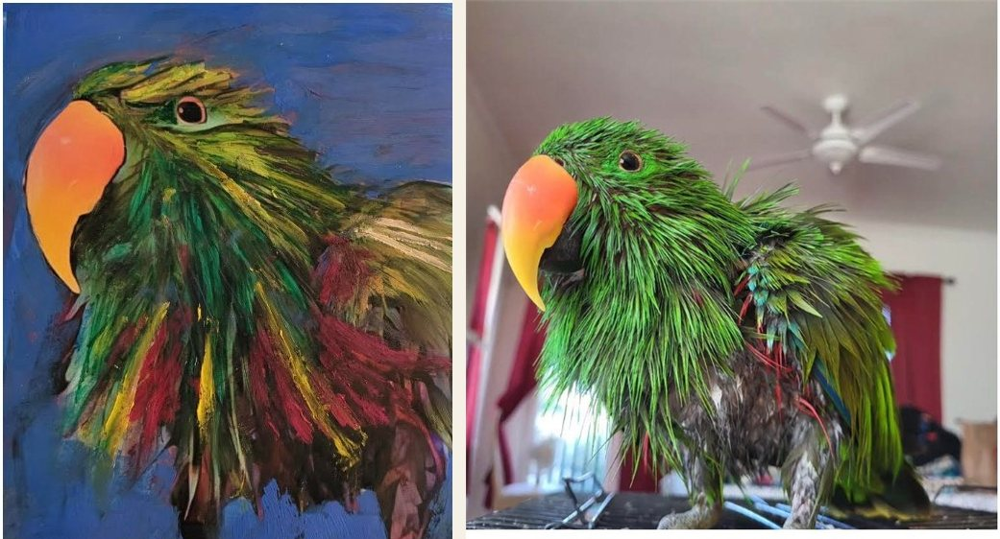
A green parrot's bright orange beak and layered feathers carry from a reference photo into a vivid blue-background portrait. One of Stephanie's early pieces.
Size: 8 × 10 in
Materials: Acrylic on canvas
Sold for $150
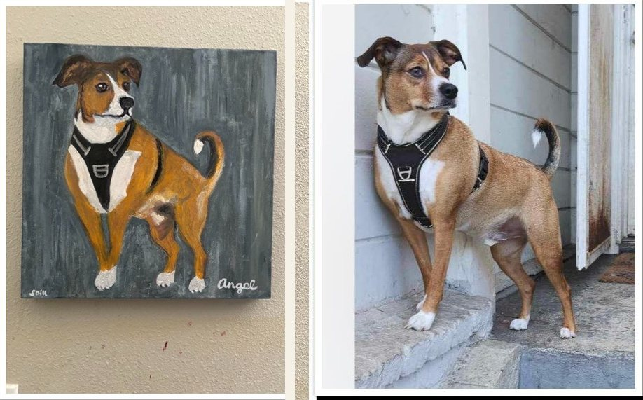
A tan-and-white dog in a dark harness stands in a reference photo beside its full-body portrait.
Size: Approximately 20 × 24 in
Materials: Oil and acrylic on canvas
Sold for $400
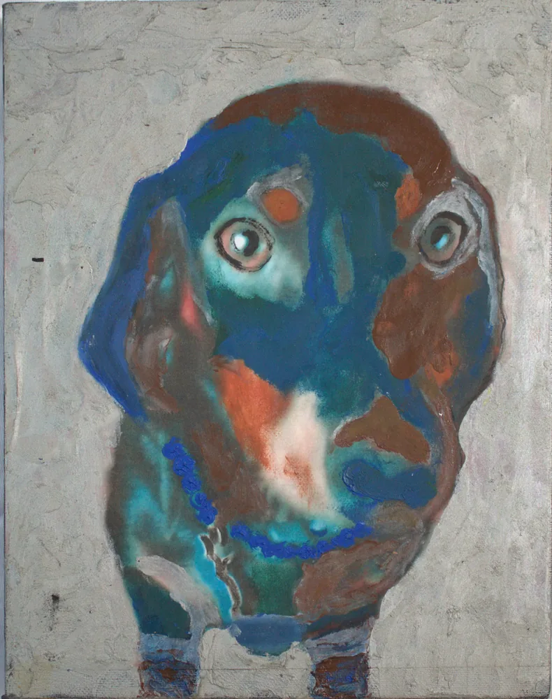
A dachshund's close-up reference photo accompanies a portrait using blue, orange and brown shapes to capture its face.
Size: 10 × 12 in
Materials: Oil pastel on canvas
Sold for $200
Stretched canvas prints: 6 × 8 in — $35
Handmade decorative outer frame +$75 · Installed hanging hardware +$5. Free local pickup; shipping quoted by destination. Prices in USD, before applicable tax.
The complete painting stays on the front, with solid-colour or mirrored edges and a small border if needed. Print and colour proof required before production. Other sizes by request after a sample print.
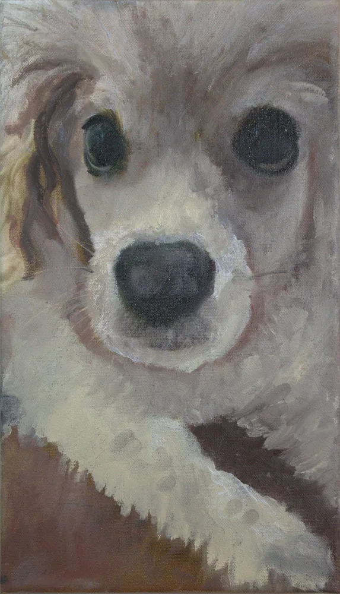
A cream-colored dog's round dark eyes and soft ears are echoed in a close-up portrait beside its reference photo.
Size: 11 × 17 in
Materials: Oil pastel and acrylic on canvas
Sold for $300
Stretched canvas prints: 6 × 10 in — $39
Handmade decorative outer frame +$75 · Installed hanging hardware +$5. Free local pickup; shipping quoted by destination. Prices in USD, before applicable tax.
The complete painting stays on the front, with solid-colour or mirrored edges and a small border if needed. Print and colour proof required before production. Other sizes by request after a sample print.
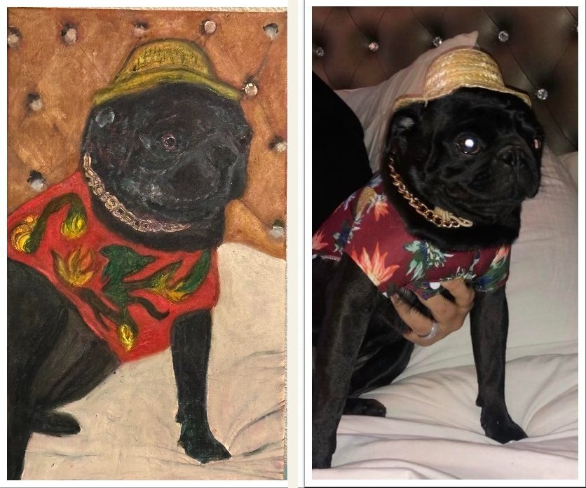
A black pug wears a small hat and bright patterned scarf in a portrait paired with its reference photo.
Size: 11 × 17 in
Materials: Oil, acrylic, and oil pastel on canvas
Sold for $300
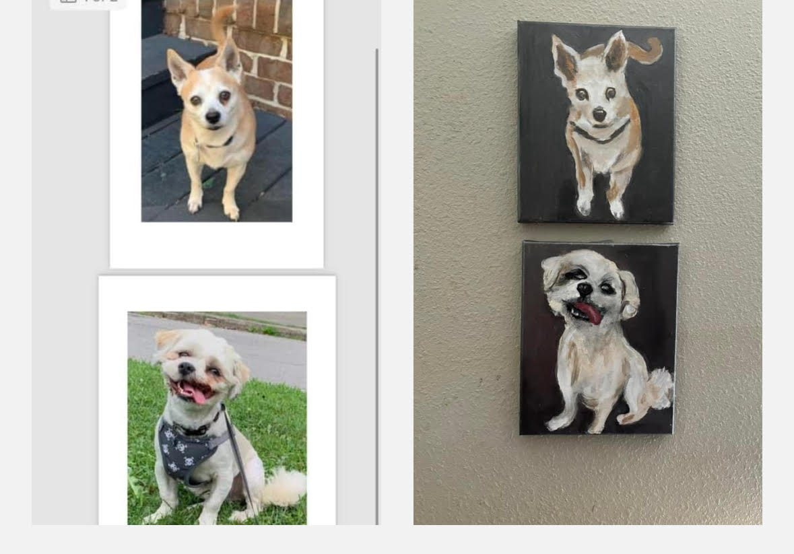
Two small dogs appear in separate reference photos alongside their individual painted portraits. The two pieces sold together as a set.
Materials: Acrylic on canvas
Sold for $400 (two-piece set)
Finished Portraits
A long-haired gray cat reclines on orange bedding in front of pale closet doors.
Materials: Chalk pastel, watercolor, acrylic, oil, markers, and canvas
Stretched canvas prints: 6 × 9 in — $39 · 8 × 12 in — $55
Handmade decorative outer frame +$75 · Installed hanging hardware +$5. Free local pickup; shipping quoted by destination. Prices in USD, before applicable tax.
The complete painting stays on the front, with solid-colour or mirrored edges and a small border if needed. Print and colour proof required before production. Other sizes by request after a sample print.
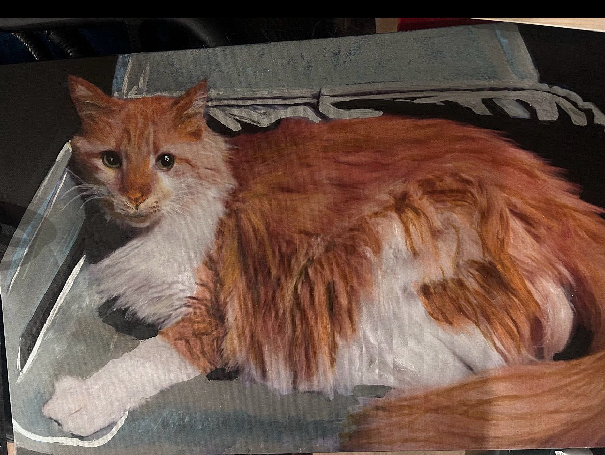
An orange-and-white cat reclines with its fluffy tail curved along the foreground.
Size: 24 × 30 in
Materials: Oil pastel, chalk, acrylic, oil, watercolor pens, fine-tip pens, and pastel chalk
Sold for $600
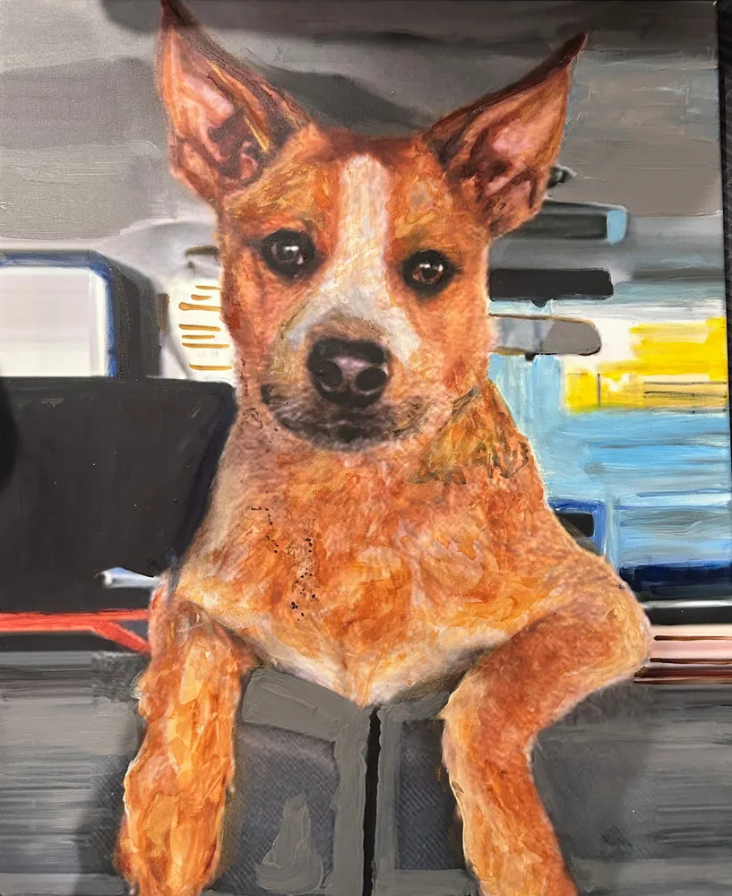
An alert red heeler rests its front paws on a seat, with upright ears and bright eyes facing the viewer.
Stretched canvas prints: 8 × 10 in — $45 · 10 × 12 in — $59
Handmade decorative outer frame +$75 · Installed hanging hardware +$5. Free local pickup; shipping quoted by destination. Prices in USD, before applicable tax.
The complete painting stays on the front, with solid-colour or mirrored edges and a small border if needed. Print and colour proof required before production. Other sizes by request after a sample print.
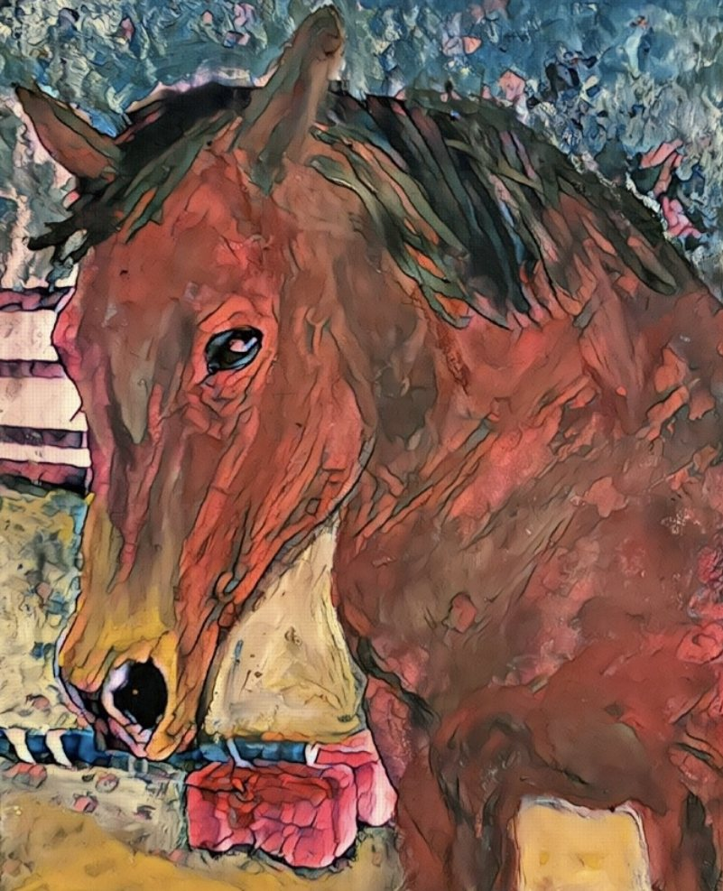
A brown horse turns its head against a densely patterned background, with warm red accents across its coat.
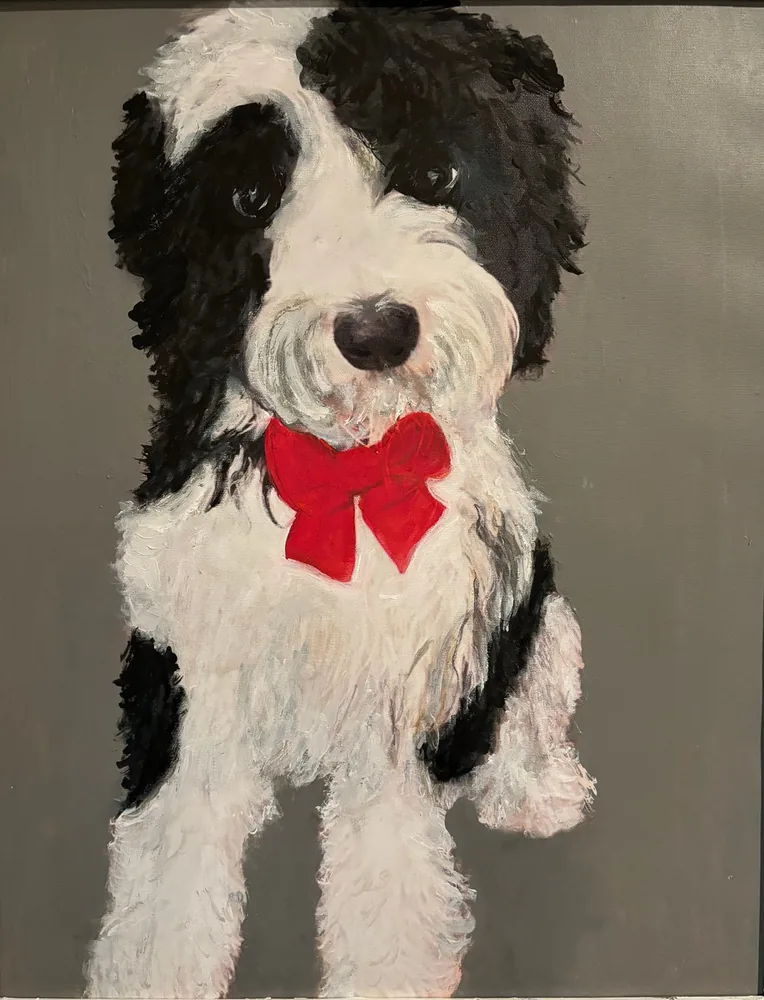
A shaggy black-and-white dog wears a bright red bow in a softly shaded portrait.
Stretched canvas prints: 6 × 8 in — $35 · 9 × 12 in — $55 · 12 × 16 in — $79
Handmade decorative outer frame +$75 · Installed hanging hardware +$5. Free local pickup; shipping quoted by destination. Prices in USD, before applicable tax.
The complete painting stays on the front, with solid-colour or mirrored edges and a small border if needed. Print and colour proof required before production. Other sizes by request after a sample print.
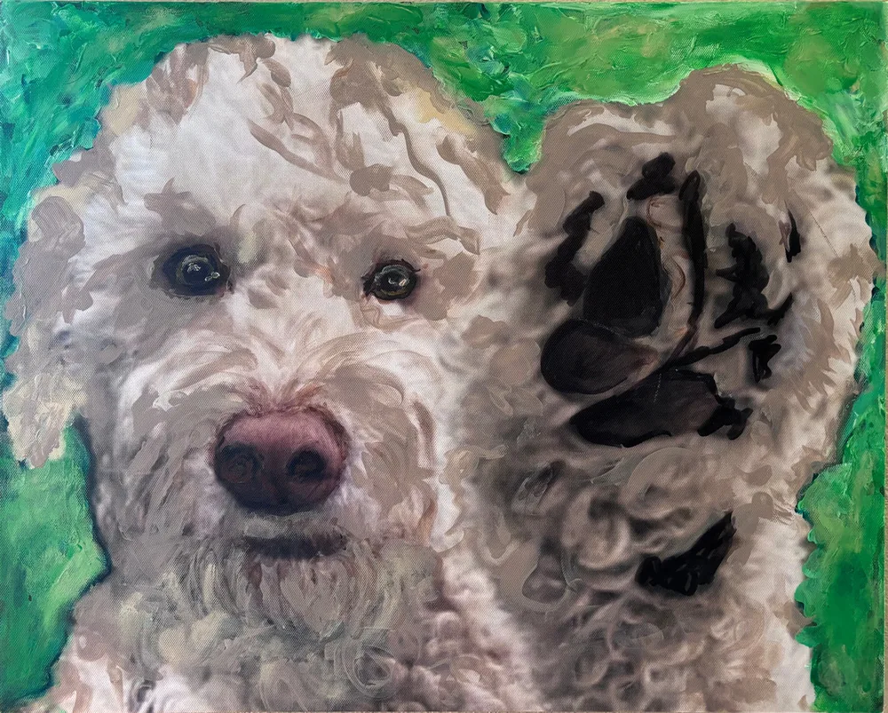
A fluffy pale dog raises one paw beside its face against a bright green background.
Stretched canvas prints: 8 × 10 in — $45 · 10 × 12 in — $59 · 12 × 16 in — $79
Handmade decorative outer frame +$75 · Installed hanging hardware +$5. Free local pickup; shipping quoted by destination. Prices in USD, before applicable tax.
The complete painting stays on the front, with solid-colour or mirrored edges and a small border if needed. Print and colour proof required before production. Other sizes by request after a sample print.
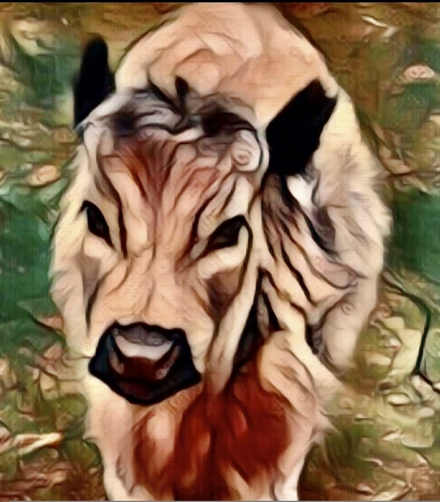
A horned animal faces forward, its deeply folded brow and shaggy coat rendered in warm earth tones against green.
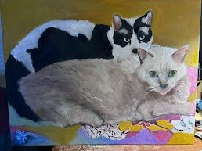
A pale cat rests in front of a black-and-white cat on a brightly patterned blanket.
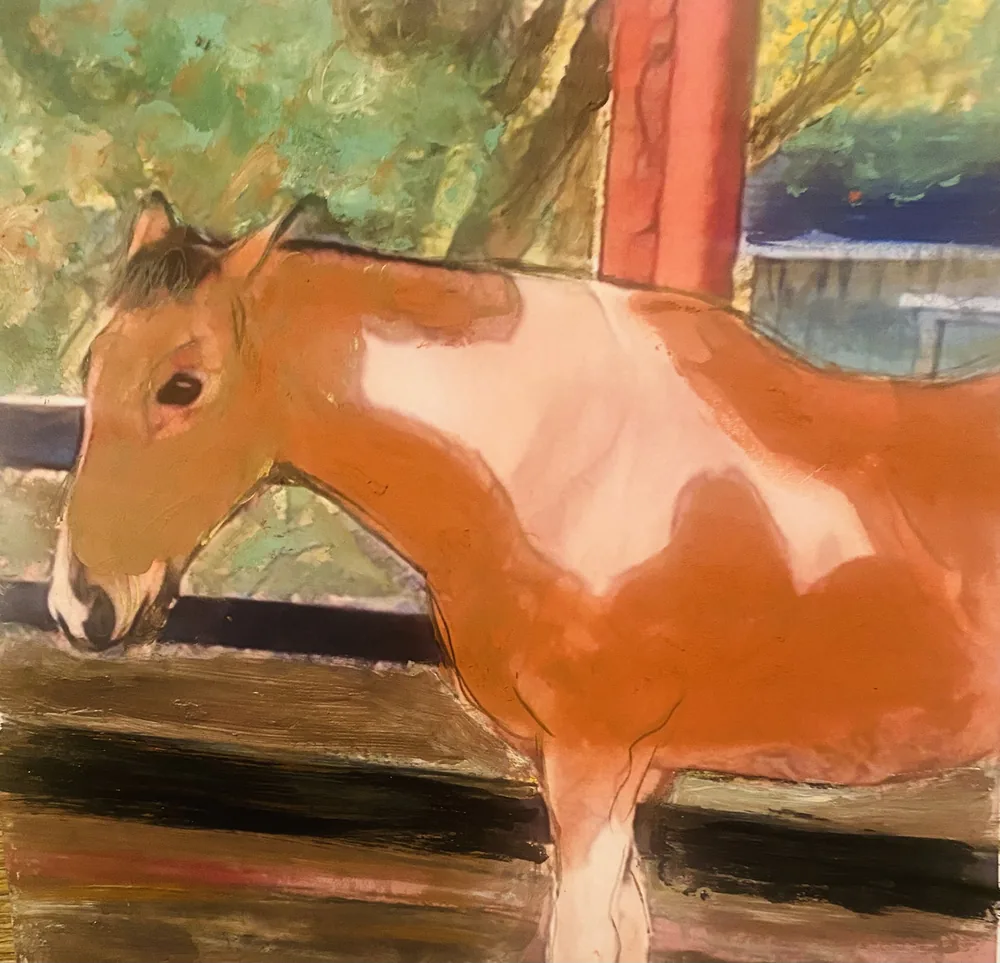
A chestnut horse with broad pale markings stands beside a dark fence beneath a leafy background.
Stretched canvas prints: 6 × 6 in — $35 · 10 × 10 in — $55
Handmade decorative outer frame +$75 · Installed hanging hardware +$5. Free local pickup; shipping quoted by destination. Prices in USD, before applicable tax.
The complete painting stays on the front, with solid-colour or mirrored edges and a small border if needed. Print and colour proof required before production. Other sizes by request after a sample print.
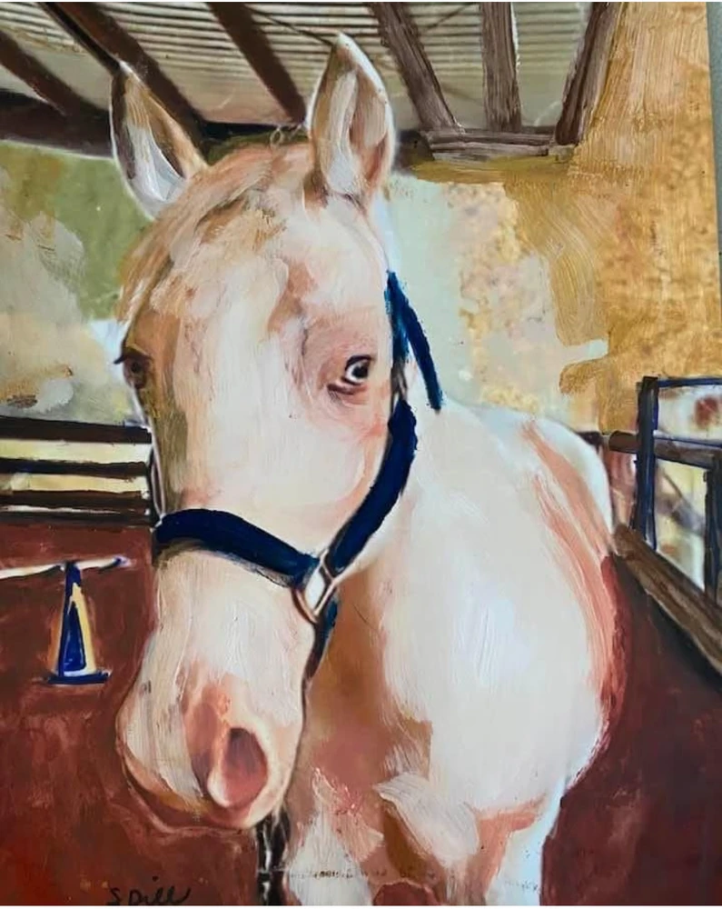
A pale horse wearing a dark halter looks outward from a stable interior.
Stretched canvas prints: Please inquire about print sizes and pricing; a sample print is required.
Handmade decorative outer frame +$75 · Installed hanging hardware +$5. Free local pickup; shipping quoted by destination. Prices in USD, before applicable tax.
The complete painting stays on the front, with solid-colour or mirrored edges and a small border if needed. Print and colour proof required before production. Other sizes by request after a sample print.
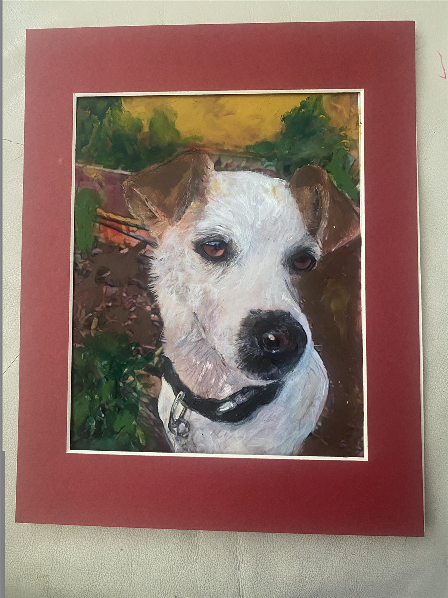
A white terrier with dark ears and a black collar looks forward in a portrait surrounded by a deep red mat.
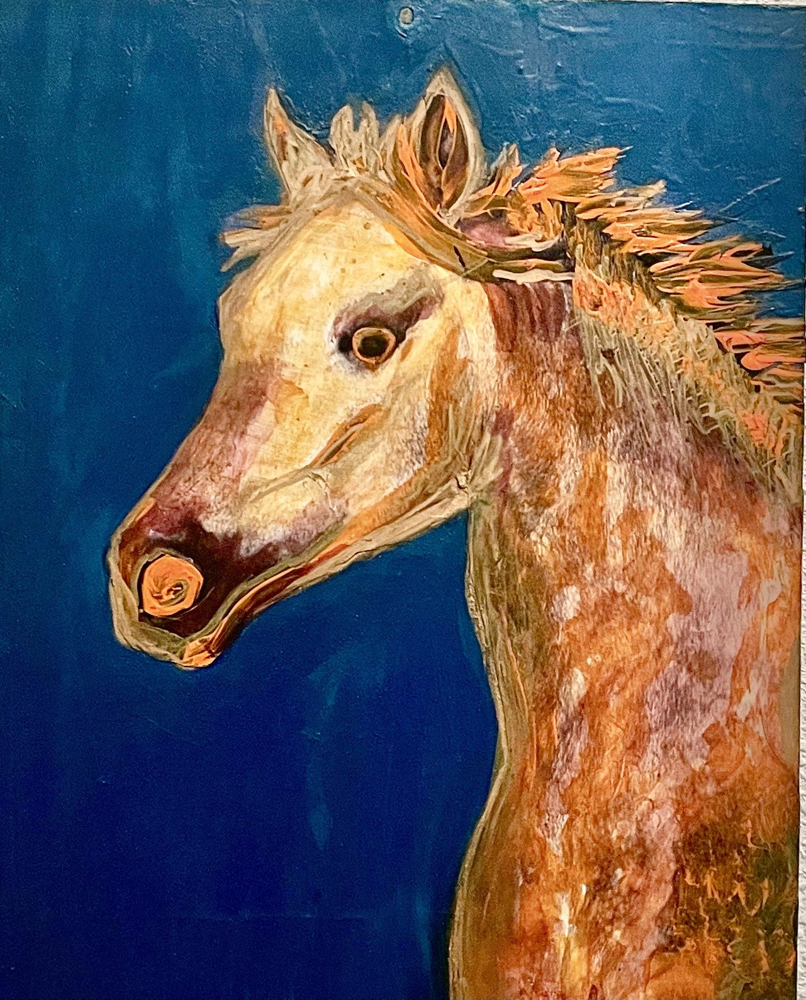
A golden horse turns its head against deep blue, with a tousled mane catching warm highlights.
Memorial pet portraits, made with care
A favorite photograph can become a lasting reminder of a beloved companion. Ask Stephanie about a memorial pet portrait, share the details that matter to you, and discuss your painting before work begins.
Working from Rohnert Park in Sonoma County, Stephanie welcomes pet portrait inquiries from across the Bay Area. Ask about size, materials, timing and delivery when planning your commission.
Discuss a Pet PaintingHow It Works
Send your favorite photo
Any clear picture works — the one that feels most like them.
Stephanie paints your portrait
A custom, hand-painted piece with all their personality built in.
Receive your keepsake
A one-of-a-kind portrait you'll keep forever.